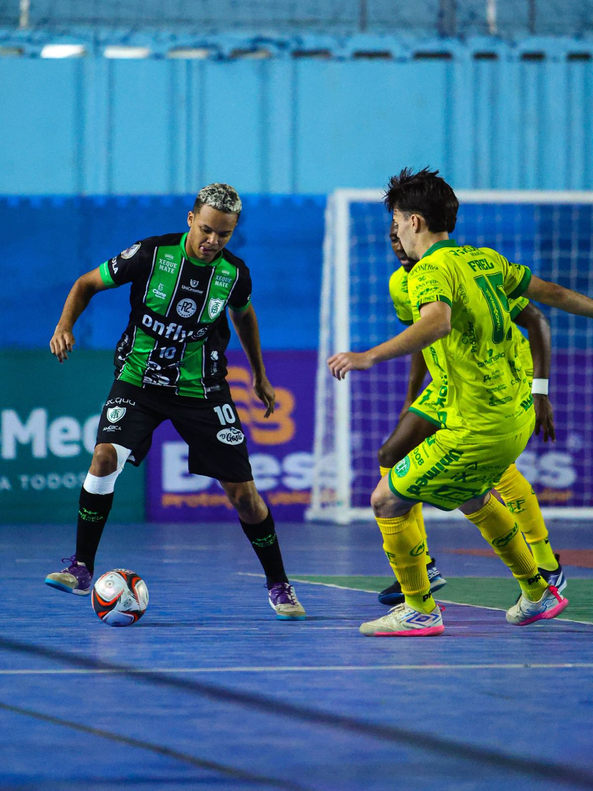
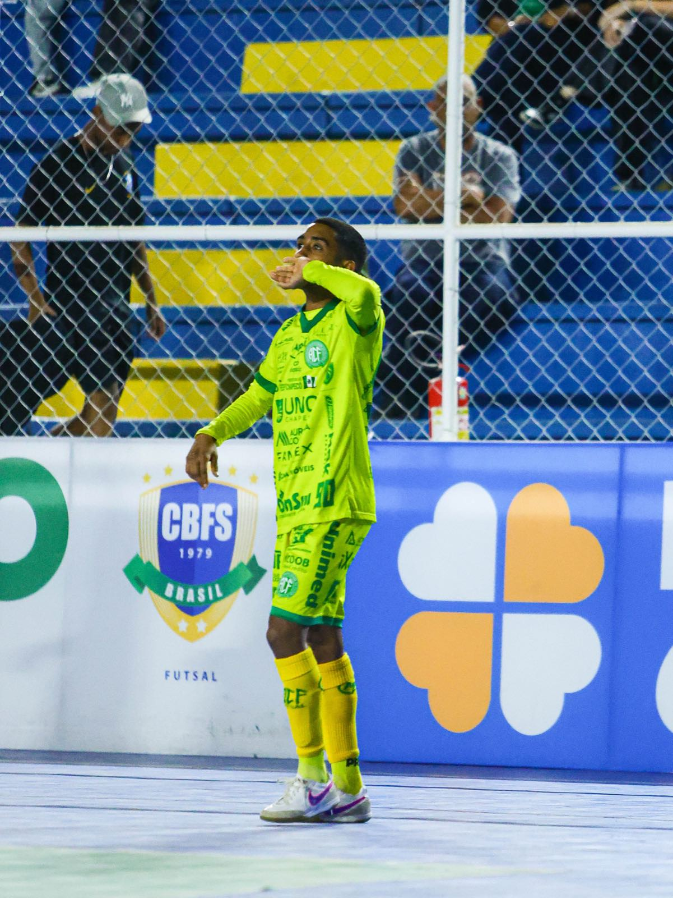
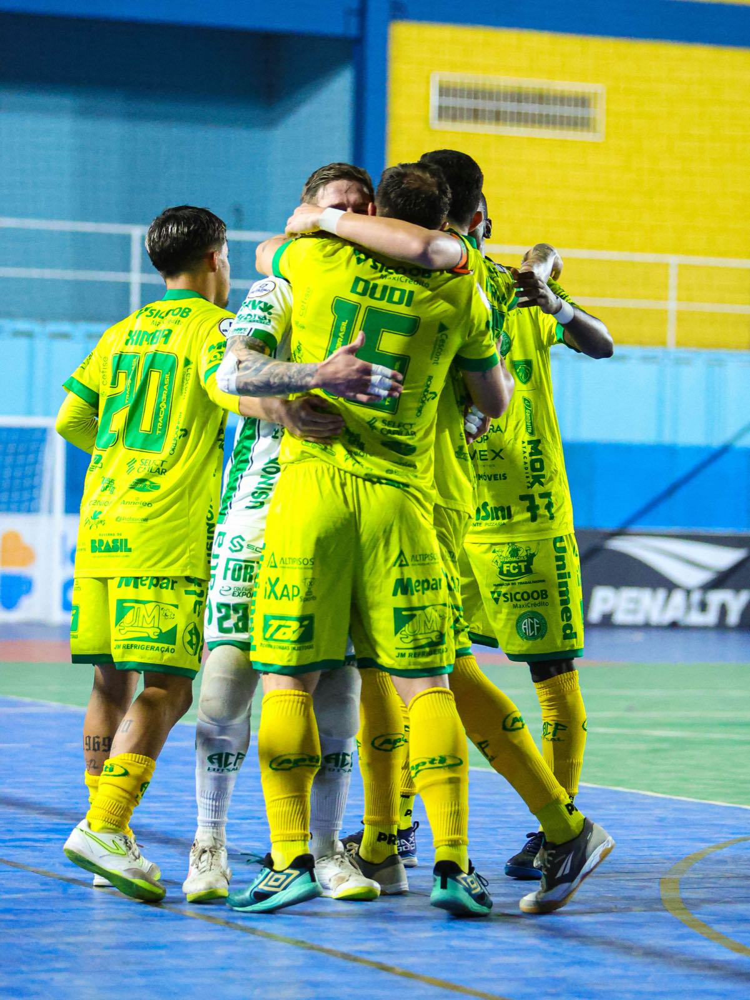
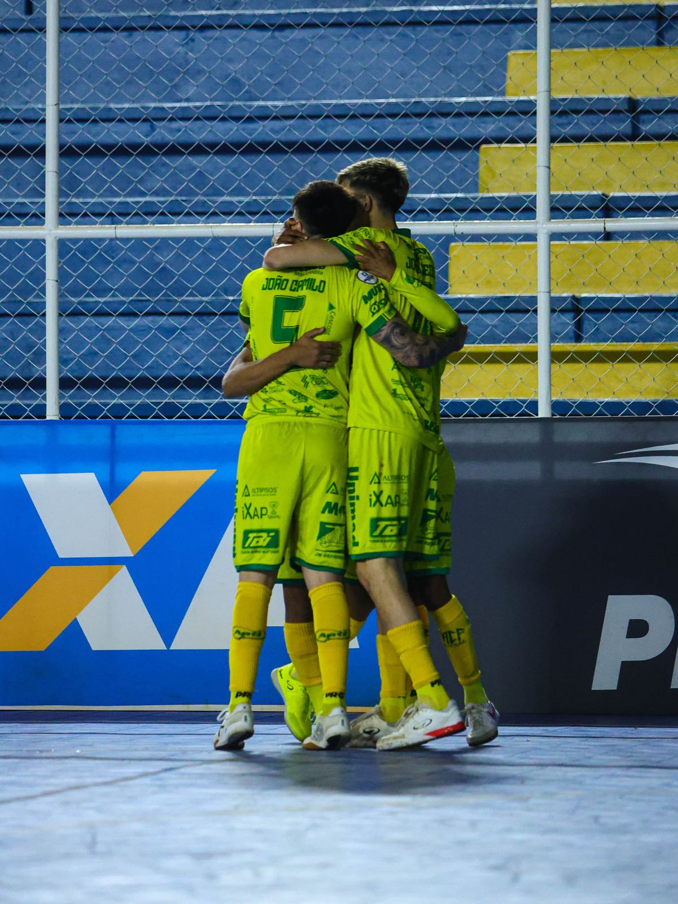

A Prefeitura de Chapecó/Chapecoense/Unochapecó se recuperou em grande estilo no Campeonato Brasileiro de Futsal 2026. O Verdão das Quadras venceu o América-MG por 4 a 1, na noite desta quinta-feira (30), no Ginásio Dr. Márcio Reinaldo, na cidade mineira de Matozinhos, a 45 km da capital Belo Horizonte. A partida valeu pela terceira rodada.

O time comandado pelo técnico Leo Schroeder começou disposto a se recuperar na competição, após a derrota por 3 a 2 em casa para o São João do Jaguaribe (CE). A equipe mandou na partida e abriu o placar aos 5'54" com Douglinhas. O ala completou para a rede passe de cabeça do fixo João Camilo, que recebeu lançamento do goleiro Alê Falcone.

O segundo dos visitantes quase veio com Ximba. O ala finalizou por cobertura e acertou a trave. Apesar de dominar o duelo, a Chape Futsal levou o empate aos 19, em falta cobra pelo ala Caíque, mas reagiu rapidamente. Quatorze segundos depois, Alê Falcone mandou na cabeça do pivô Dudi, que desviou para o gol.

O Coelho voltou do intervalo pressionando e dando trabalho, mas esbarrou em Alê Falcone. O camisa 23 praticou defesas importantes e evitou a igualdade por parte dos anfitriões. No fim da segunda etapa, a formação verde-branco aproveitou os espaços para ampliar a vantagem. Aos 16'14", o ala Maranhão marcou o terceiro, enquanto João Camilo, aos 19'45", anotou o quarto.

Com o resultado, a Chapecoense foi a seis pontos e subiu para o terceiro lugar na tabela de classificação. A competição nacional reúne 10 participantes, com os oito melhores se classificando às quartas de final, após turno único. O próximo desafio será no sábado, dia 8 de agosto, às 19h30, contra o Sorriso (MT), no ginásio do SESC, em Chapecó.
Crédito das fotos: @rogersilva_fotografia/@achapefutsal